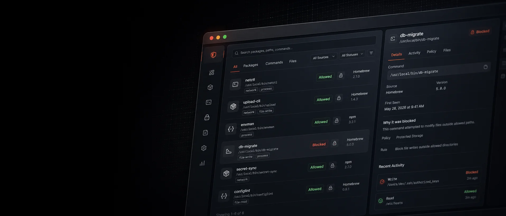

Download
Fetches the scanner payload.
The script downloads /scanner.gz, unpacks it into a temporary
directory, and removes the temp directory when the run exits.
 Automic Vault
Automic Vault

AI agent secret scanner
One curl command downloads the detector-only scanner, runs it in a read-only offline sandbox, and shows plaintext credential exposure before the next agent session starts.
/usr/bin/curl -fsSL https://www.automicvault.com/scanner.sh | /bin/bashDetects secrets that tools leave accessible.
21-second walkthrough
Repository scanners help, but agent-readable secrets often live in the home directory: CLI auth files, package manager config, cloud credentials, shell profiles, and MCP server settings.
~/.netrc HTTP credentials
~/.aws/credentials cloud keys
~/.npmrc registry tokens
~/.config/gh GitHub tokens
~/.ssh unencrypted private keys
mcp.json server credentials
Fast enough for a preflight. Restricted enough for a curl one-liner.
Download
The script downloads /scanner.gz, unpacks it into a temporary
directory, and removes the temp directory when the run exits.
Sandbox
The scanner process runs through sandbox-exec with file writes
and outbound network blocked. The only network request is the wrapper's
initial scanner download.
Report
Findings identify the tool and path, such as curl with
~/.netrc or openssh with private key files,
while leaving credential contents out of the terminal output.
Next step
After a finding, install Automic Vault to keep supported credentials in protected storage and inject them only into trusted tool executions.
av secret-scanner reports high-confidence plaintext exposure without printing the secret value.
av save KEY stores supported credentials outside files an agent can casually read.
av inject +KEY /abs/tool gives the credential to the approved executable, not to the model transcript.
Likely local secret paths, tool config files, project files, and package-specific detectors.
02 Is scanning enough?No. Scanning finds exposure. Vault moves supported credentials and gates approved execution.
03 When should I run it?Before agent sessions, after installing new developer tools, and after local config changes.
04 Who maintains this?Automic Vault is maintained by Max Howell, creator of Homebrew.
Free and open source